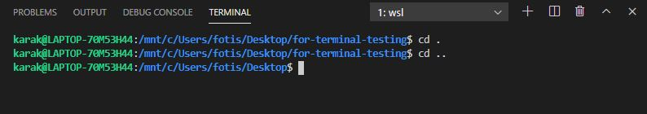
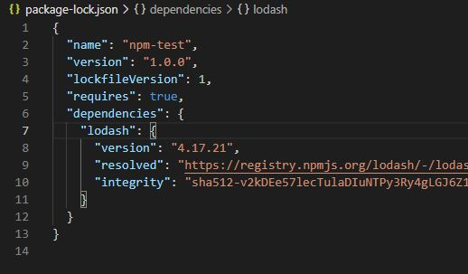
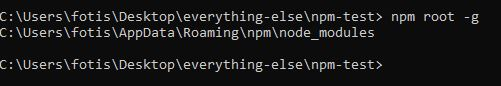
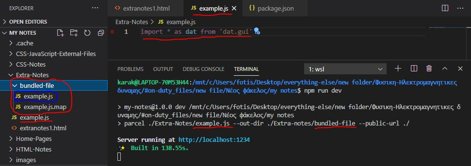

Home Pages:
Informations included in this page:
How to install VSC live server extension
In my extra notes I talk about web development skills and tools that a developer should know, as well as whatever else I find useful but doesn't fit in any other category of my notes.
How to install VSC live server extension
When you are using the command line in any computer, and you are writing commands and text appears on your screen, that's what we call a terminal application. This terminal application is sending your commands to a Shell, and the Shell is responsible for understanding your commands and executing the commands you request.
On Linux and Mac, one of the most popular shells available is Bash, which allows you to type in commands, and executes those commands, and then see those results on screen, and it also allows you to take information from one application and pipe it or pass it into the next application, then pipe it into the next application and so on. That information is passed as text and allows you to get the output of one application and pipe it into the next.
In Windows, we have the Cmds shell, which can also execute commands, it can also pass information from one command to the next and that information is passed as text, however, Cmd is relatively limited in today's world, so we were introduced a new technology back in around 2005 called PowerShell.
PowerShell is a whole new approach to command-line shell technology. It essentially still provides you a command-line syntax, and scripting syntax that you can type commands into but it takes the information that you can pass from one application to the next, and passes it as rich objects that you can query and manipulate far more easily than you can process text. PowerShell is now available on Mac and Linux as well, and it's becoming very broadly adopted.
Bash is much more applicable when it comes to web development, being the default command line for many Linux/*nix systems.
In order to use bash in Windows 10 you will have to use Windows Subsystem for Linux (WSL), which you can do from setting and then you have to download Ubuntu to use as distribution for WSL, more information about how to do this can be found in the following video:
After you are done, open your terminal in VSC and type bash, after you do that you should be able to run bash commands without a problem:
So, the first command we are gonna see is pwd, which stands for Present Working Directory and it returns the directory you are currently in, for example, in VSC's terminal, when you open a new terminal window you will by default be inside the folder you had opened in VSC, let's try this:
As you can see, the path of my folder is returned, if I wanted to go up one level, so, in other words, if I wanted to leave the file and enter the Dekstop I could write cd .. command, every time you write cd .. you enter the previous directory of the one you are currently in, here is an example:
To enter a file you can use cd path\, if you write the path of the file followed by a backslash "\" then it should work, let's try this:
If the terminal is starting to get too full of commands, then you can use the clear command to clear the terminal. If you want to reuse a command, you can use the up and down arrow keys which will reference to the commands history, the up arrow will return the previous commands, and if you go too back and pass the wanted command you can use the down arrow to reverse, think of it as a list of commands that were recently used, every time you press the up arrow key you go down the list, towards the older used commands, every time you press the down arrow you go up the list towards the newer used commands. Another useful tip to save time is to use the tab key which will fill in the command for you, if for example I wanted to access my for-terminal-testing file and I was inside Desktop I could write cd for- and then press tab, and if the for-terminal-testing file was the only file that starts with for- then the name would be filled automatically.
The mkdir command stands for Make Directory and it can be used to create files, if for example I wanted to create a folder called Steve I could write mdkir Steve, let's try this out:
The ls command returns a list of all the files inside the folder, here is an example:
If you wanted to create a file, such as an html file for example, or any kind of file in general, you could use the touch command, followed by the name of the file:
The ls -l command also returns a list of the files inside the present working directory however, the list contains a little more information about the files:
As you can see, the directories (folders) begin with dr while the files begin with -r.
Files which their names start with a dot are called hidden files and will not be visible in the lists:

If you want to see the hidden files, you can write ls -a, which will show all the files, or, if you want to see all the files with more details about each file you can use ls -la:
As you have probably noticed, there are also two directories I dididn't add in my directory, one is .., the other is ., as I said before, cd .. takes you to the previous directory of the path, so this .. directory is the parent directory, while . is the current directory:
If you want to remove a directory (folder) you can use the rmdir which stands for Remove Directory, like this:

To remove a file you can use the rm command, followed by the name of the file you want to remove:
When you try to remove a directory that is not empty, an error message will show up:
To force a directory to be removed even if it is not empty you can use rm -rf command, which will remove the directory and everything inside it:
The mv command stands for move, it can be used to move files but also can be used to rename files, if you want to rename a file you can do this like this: mv example.html newname.html, if you want to move a file you can write: mv example.html path/. To move and rename a file you can do something like this: mv file.html path/newname.html and lastly if you want to move multiple files then you can write mv file1.html file2.html /path, here is an example:
The next command we are gonna learn is the cp command which stands for copy, it lets you compy a file or folder, the syntax looks like this: cp file.html path/copiedfile.html. If you want to copy the file at the same directory then you don't need to add a path, you can just write the name of the copied file like this: cp file.html copiedfile.html
Here is a video that helped me a lot:
To install extensions to Visual Studio Code you can very easily access the your extensions or find and install new extensions by entering the extensions section which can be easily accessed by clicking here:
If for whatever reason, you are not viewing this bar at the left you can also access the extensions section another way, to do that, hold ctrl and shift and then press p, this will open a search bar, there, type "install extensions" and click on Install Extensions, this will open the extensions manager.
After you do that search for Live Server, and click on it:
As expected, the next step is to begin the installation.
After the installation is finished you are all set to start using it, there are a few different ways to use it, and you can actually read the instructions in the details of the extension, but the easiest way to use it in my opinion is to simple right click on the html file you wanna use and click open with live server. After you have done it the server will update every time you save the file.
NPM stands for Node Package Manager that is installed with Node.js, without that necessarily meaning you need to know Node.js to use it.
NPM is, as the name says, used to manage packages, what are packages? They are usually referred to as modules, or JavaScript libraries, and they are basically JavaScript code that somebody else made and shared with us, which can be used to simplify and speed up the process of specific tasks. For example, there is a package called moment which allows you to easily manipulate dates and stuff, with this package you can for example create a date object and with one method of the package you could display the date in a wanted format without having to hand write the code for it.
To install NPM you should simple go to this site and download Node.js, as I said before, NPM will be downloaded with Node.js, so after you are done downloading, NPM should have been downloaded too, and if you search for it you should find it in the nodejs folder:

To install packages in your project you are gonna need a package.json file first, but what is it used for? And why is it so important?
The package.json file contains information about your projects, such as name, description and others, but what's more important is that it lists all the dependencies (name & version) of your project, what are dependencies you may wonder now, so let me explain. Dependencies are the packages you are using, basically, you are depending on those packages, since if those packages were to be removed then problems would be created to your project (since it's using those packages). The versions of those packages are also included in the package.json file as well as instructions about how the versions should be updated, since versions could also create problems to your Project if they are changed. Lastly, NPM scripts can be added in the package.json file but I will talk more about those stuff later.
When using one package by the way, you may only depend on that package, but that package may depend on other packages that may also depend on other packages, and that dependency chain goes deeper and deeper.
Knowing all that is useful, because by only having this package.json file in your possesion later allows you to download all packages to the specific versions the project needs them all with one command. For example, I could share my files with another person, but not send him the modules of the packages, and only send him my files and the package.json file, with only that, he could then with one command get everything downloaded by him self. Before we learn about that however, let's first learn how to create a package.json file in the first place.
You could hand write the file, however, that would be stupid, since you can very easily automatically do this using the npm init command:
First I'm gonna change shell in my terminal to cmd, and that's only because for some reason I am facing some problems while trying to access npm commands with bash or PowerShell, I will find a solution and write about it later, for now we are gonna use cmd:
Now, let's use the npm init command:
So, when I wrote npm init I were asked few questions which I had to answer, some of those questions already had a default answer that I could leave be by pressing enter, those default answers were between (), I could also use enter to skip questions.
If you want to, you can use npm init --yes or npm init -y to skip the questioning and immediately make the package.json file using the default answers, so let's remove package.json and try to initialize it again:
If you want to edit the default options you can use npm config set init-{the option} 'value', you could also do this without the config and as long as it had the keyword set it would still work. To check the default value of an init option you can use npm config get init-{the option} or just npm get init-{the option} without the config, here are some examples:
Let's now check if they are, in need, the default answers:
Alright, so now, let's take a quick look into the package.json file it self, just so we see what it looks like:
To install packages I recommend checking out this site where you can find packages, which usually include the install command you have to use to install them which you can copy paste, and they usually also contain guides and instructions of how the package works and stuff.
To install a package you should use the npm install command, in the past, writing npm install package would only install the modules without updating the package.json file, and to do both you had to use the --save flag like this: npm install package --save, however, today it will update package.json even if you don't add that flag:

Alright, so, node_modules folder was added, which contains the modules of the package, and a file called package-lock.json was also created, this file is automatically generated for any operations where npm modifies either the node_modules tree, or package.json. It describes the exact tree that was generated, such that subsequent installs are able to generate indentical trees, regardless of intermediate dependency updates.
The package.json file was also updated, since now it has one dependency, let's take a look in both two files now:
Here is the package-lock.json file:
And here is the package.json file:
Let's now install another package called moment:
This will update both files, but I'm not gonna show that to you, the reason I added this package is so that I try using it in my code, first, let's create a javascript file and write the code:
I used require() method to add the package, if I was writing the code to be ran by a web browser I would had used ES6 import keyword, but now, I'm just gonna run it with Node.js by writing node index.js in my terminal:
So, this package basically helped me create a beautiful date format which I normally would have to write few lines of code to make, with just one method, and it actually has many kind of different formats you can use, and it just saves you a lot of time, since without it you would have to hand write everything from scratch.
If I wanted to share this application I just created, under other circumstances, I could be using twenty different packages for example, if it was a big project, and sharing all my files with all those packages would be hard, because twenty packages are a lot of content, the good thing is, as I had mentioned before, you don't need to share the modules, as long as you have the package.json file in your possesion you should be able to just type npm install in your terminal, and it will install everything for you, let's remove package-lock.json file and node_modules folder now and use npm install to see if it works:
Alright, so, to install the packages needed for the application to run it looks at the dependencies of the package.json file, since the application depends on those packages, but what are those other dependencies called dev-dependencies?
You are gonna install something as a dev-dependency if it's only gonna be used for development without your application being depending on it. One example I can think of is something like gulp which is a task runner, so let's install gulp and also let's install gulp-sass which is a plugin of gulp, you can actually install multiple stuff with one command, at the end we are also gonna use the --save-dev flag to let it know we want to install it as a dev-dependency, this flag can be added after or before you type the packages names, like this: npm gulp gulp-sass --save-dev or this: npm --save-dev gulp gulp-sass.
After I installed the packages the package.json was updated, and we can now see that gulp and gulp-sass were indeed installed as dev-dependencies:
If we now removed the modules and package-lock.json like before, we could use the npm install --production command and only the regular dependencies would be downloaded without the dev-dependencies if you wanted to install both you can still just type npm install, let's try this:
As you can see, only two packages were installed.
To uninstall dependencies you have to use the npm uninstall command, to uninstall a dev-dependency you also need to add the --save-dev flag or else it will be uninstalled from modules but will remain in dev-dependencies inside the package.json. Let's uninstall gulp and gulp-sass dev-dependencies now:
There are also a few alternatives to uninstall command, you can also use remove, rm or even un to uninstall packages, but uninstall is just easier to remember.
If you want to install a specific version of a package you can write npm install package@version. To update the version you can write npm update package, let's try this out:
First, lets download one of the earlier versions of lodash:
Now, let's update it to it's newer version:
Let's talk a little about the version numbers and what is each number used for:
Usually the last number is increased when a bug is fixed so updating that is safe, since there won't be any major changes that could break your code. The middle number is increased when a new feature is added and it's also safe to update since no major changes that could break your code are added. The first number is increased when a major change happens, and it is unsafe to update since it could break your code.
Alright, so now, I want you to look at the image above and notice that little ^ symbol that is infront the version numbers, what does that mean? Before, I talked about how you can share your package.json file and people can use npm install to download all dependencies, the carrot symbol indicates that the latest minor version should be installed, the first number of the version will always be the same, but the two others can be increased. If we added the ~ symbol instead that would indicate that the lates patch version should be installed and the major and minor versions would stay the same. If you didn't use any symbol then that would mean you want the exact version to be installed and lastly, if you replace the version with the * symbol that indicates that the latest version should be installed.
All the packages we have installed till now were installed locally, meaning they were added inside the node_modules folder in our project's folder, but what are global packages? A good example of a global package is the live-server package which reloads your browser every time you update your files. To install a package globally you should use the -g flag. Let's try to install it then:
Since it is global it isn't gonna go inside our node_modules folder and it's not gonna be added in package.json dependencies, it is being installed on our computer. If you want to know where your global modules are you can use npm root -g command, like this:
You can view the file too, as you can see, I only have one package installed in my computer:
So, since it is a local package we can actually run it from anywhere but generally you wanna run it inside an application directory, let's try it, we are also gonna need an html file so that you can actually display things on the screen:
If you want to uninstall a global package you can do that just like I said before, but you should also use the -g flag, like this: npm uninstall live-server -g
If you want to list all the dependencies of your project you can use npm list command:
Let me install gulp now really quick, to show you something, gulp actually has a lot of dependencies of it's own, and many of it's dependencies have other dependencies, and so on, so take a look to the list with gulp inside:
As you can see, there is some kind of chain of dependencies, and they are a lot. So, how could we only list the top level of dependencies? If for example we only wanted to see our project's dependencies? To do that we could use the --depth flag, for example, if we only wanted to list the top levet we could write npm list --depth 0 and that would list the dependencies of with a depth of 0:
If we also wanted to list the dependencies of our project's dependencies we could set the depth to 1:
Last thing I want to talk about are scripts, so, if you take a look into the package.json you can see there is an object called scripts. There you can create custom commands, for example, I could write "greet": "node index.js" and whenever I wrote npm run greet on my terminal the index.js would execute, let's try this:
In the index.js I'm gonna write something simple, let's just write console.log('Hello World!'), then, I'm gonna create the script:
Now, let's try to run the script in the terminal:
There are also a few script names that do not require the word run in order to work, for example, start and test and probably a few more.
Here is a really cool video that helped me a lot with Node Packet Manager, I recommend watching it, even though it's a little long:
So, I just figured out how to use npm commands with bash, to do so, you will need to get Node on your Ubuntu, first you should install NVM, which stands for Node Version Manager and is a version manager for Node,js, to do that, we should use the following command: curl -o- https://raw.githubusercontent.com/nvm-sh/nvm/v0.35.3/install.sh | bash
After you do this, you should restart your terminal and then install Node LTS version by using this nvm command: nvm install -lts
After you have done that, you should be able to use npm commands without a problem, let's try this out:
If for some reason you don't have curl, which is a bash script that lets you download files, then you should use the following command: sudo apt-get install curl
Module bundlers are tools that frontend developers use to bandle JavaScript modules into a single JavaScript file that can be executed in the browser.
Some modern module bundlers are webpack, rollup, fusebox and parcel. I'm actually going to talk about parcel later in this page, because it's a pretty simple module bundler to use, and I may also talk about webpack later, which also is pretty popular, probably more than parcel but it needs a little more effort to learn.
Module bundlers are required because:
To illustrate, imagine you are building a web application, which is made up of multiple JavaScript files. You add JavaScript files into html via script tags:
Each file requires a seperate http requests, which is 5 round trip requests in order to get your application started. So it would be better if you can combine all five files into one single file:
So how do we generate the dist/bundle.js?
Several challenges arise in the process:
All of these can be solved if we know the relationship among each files, such as:
These information can solve the challenges brought up. So, what we need is a declarative method to describe the relationship between files, which led us to the JavaScript Module System.
CommonJS or ES6 Modules provide ways for us to specify what files we are depending on, and which of their interface we are using in our file.
Parcel is a web application bundler, which bundles your application, so what it basically does is that it takes all your JavaScript files, HTML files, CSS files, any of those different type of files you have and bundles them up, minifies them and puts them into a directory for you. Also, a really cool thing about parcel is that is makes your life even more easier, by doing automatic transforms, so basically, it will take your sass and convert it to CSS it will take your modules JavaScript and convert it to normal JavaScript, it will use Babel to transpile your JavaScript so that you can use all new feautures of JavaScript so that all browsers can use it. It does that, and a few more stuff, and all this with zero config code, you run one line of code and are ready to go, not like webpack which takes some time to set.
First thing I am gonna do is set up an NPM project, by writing npm init -y in my terminal, then I will install parcel by writing npm install parcel-bundler --save-dev. After that the very next thing I am gonna need is some basic project structure to use, I'm gonna put all my files inside a folder called src. Let's finish with the preparations so that we are ready to begin using parcel:
So, the JavaScript files have some pretty simple code inside, on exports a function, the other imports the function and uses it, then this index.js file which is the file that imports the function is used inside index.html:
To make things more interesting, let's also add a CSS style sheet file and an image to our project:
Alright, now, to bundle those files we are gonna create two NPM scripts, you don't really need to create them, it's for organization porpuses, so that I don't have to hand write the commands every time I want to run them, the first script will simple run parcel src/index.html and the second script will run parcel build src/index.html:
Now, all I really have to do is type npm run dev and a folder with all my files bundled together will be created, with just one command, couldn't be any simplier. However, there is a chance, you may get some errors, like I did:
As usual, I get errors, like I always do, so annoying, anyway, I did my research, which took some time, and I found a solution, there are actually two solutions, one is to revert back to version 1.12.3 of parcel or to update to version 2 of Parcel. To revert back to version 1.12.3 you should uninstall parcel and then type npm i parcel-bundler@1.12.3 --save-dev to download the wanted version, to update to version 2 you should write npm i parcel@next --save-dev.
After you have fixed the problem, everything should work fine:
After you do this, you can click at the http link and your page will open in a local server. Another cool thing is that whenever you update your files in src folder the files in dist folder will also be updated automatically and your local server will reload, just like how online-server does.
If you want to import Sass you should import it through JavaScript and not thorugh HTML, then parcel will do it's magic and convert sass to CSS, let's try this:
First, let's change our files to import SASS instead of CSS:
Now let's bundle the files again:
Let's now press on the link to open the local server that was created for us to do our developing:

The background may seem white, but it is indeed lightcyan, I should had used a more obvious color I guess but I didn't because I'm stupid.
Anyway, the main reason I ended up learning about parcel in the first place was because I needed to to use packages on the browser, because without it I was getting errors, so let's try installing moment package really quick:
So, something I want to mention is that as you can see, Sass has also been installed in my dev-dependencies, it was actually automatically installed by parcel, and that's just so cool and I wanted to mention it, anyway. Let's now continue and write some code to actually use moment package:
Normally, if I had just opened the index.html on a live server without bundling the files using parcel, you would get an error, for my case at least, the module can't be found, from what I understand, the browser expects you to give it a file path, while you are trying to access the module through NPM, and somehow pascel takes care of this problem for you, here is the error I got without using pascel:
When opened in the local server made by pascel however everything worked just fine:
Alright, there is still one problem to discuss, we are only able to view the page through that local server, if we were to try and access the index.html file from inside the dist folder see what would happen:
After doing my research, I discovered the probem behind this weird behaviour, if you check your HTML document inside the dist folder you will see that the paths of the files are absolute:

To fix that, you should use relative paths, which you can do by either removing the backslash or addint a dot before the backslash. Doing that on your own however is time consuming, so we are gonna add the following flag to the parcel commands inside your scripts: --public-url ./. This will make the src paths relative rather than absolute:
So now, what exactly does the build command do? It basically minifies the files to take less space, but when used they will no longer automatically update, so that's why I recommend using the prod script only after you are done developing the files.
What if you didn't want to create the bundled files inside the dist folder? What if you wanted to use a custom folder? You can do that by using the --out-dir path flag, let's create a folder called bundled-files and use it to store our bundled files:
Here is a really cool tutorial you can watch, in my notes I included some more information that were not included in the video abou thow some bugs can be fixed, but in the video you will also learn about how you can add plugins if you want to, I don't really care about plugins at the moment, getting it to work was all I needed so that's why I didn't go more in depth.
I think, now that I finally know how to install packages and make them work in browser I should try using one for real, and that's what we are gonna do in this section, I wanted to learn to use a package called dat.GUI API because it seems pretty useful for animations, and I'm currently learning canvas animations, and this package was actually the reason I ended up learning about terminal, NPM, module bundlers and all those stuff in the first place.
This package creates a square on your screen in which you can add variables inside to be able and change them without having to do so through code, which would take time. The best feauture I believe is that it even lets you set a range of numbers that can be set on a variable, which creates a scroll bar you can use, which means you don't even need to type the values with this package.
First thing I will do is initialize NPM, then I will install parcel globally, since I want to be able to use it on multiple projects from now on, and then I will instal dat.gui:
So, now, if I were to create a JavaScript file and use it on this page you are currently viewing, if I bundled this page, a mess would be created, it would bundle all the images, and js files that are being referenced in the page. To avoid that I am only going to bundle the JavaScript file and link the bundled JavaScript file to this page: 
After I run the dev script, the example.js file should be bundled and placed inside the bundled-files folder, now we can reference the bundled example.js file inside a script element in our HTML document and it should work.
I will now reference the bundled example.js file to this page, then I can edit the original example.js file and it will automatically update the bundled file too:
From now on, I will be writing the code I want to write inside the example.js file, which will automatically update the bundled example.js file, so, let's make a button that activates the package, so that it is not open from the time you enter the page:
[example.js] JavaScript Code:
import * as dat from 'dat.gui' window.addEventListener('load', (e)=>{ let button = document.getElementById('dat-button'); var gui; button.addEventListener('click', (e)=>{ let div = document.querySelector('.close-button'); if(div == null){ gui = new dat.GUI(); } else { gui = undefined; div.remove(); } }); });
Outcome:
Let's try to create a simple project now, we are gonna use the gui.add(object, 'property', min, max) method to add variables, the last two paremeters are optional, if you don't add them you will simple have to type in the values, if you use them there will be a scroll bar you can drag.
If you want to seperate variables in folders, you can write let folder = gui.addFolder('name') and then use the add method to the wanted folder, like this: folder.add(object, 'proeprty', min, max)
HTML Code:
<canvas id="canvas-01"></canvas>
CSS Code:
#canvas-01{ border: 2px solid black; display: block; margin: auto; } /* Some custom decorations I wanted to add to the variable changer */ .property-name{ background-color: gray !important; } .c{ background-color: gray !important; }
[example.js] JavaScript Code:
import * as dat from 'dat.gui' window.addEventListener('load', (e)=>{ let button = document.getElementById('dat-button'); var gui; button.addEventListener('click', (e)=>{ let div = document.querySelector('.close-button'); if(div == null){ gui = new dat.GUI(); } else { gui = undefined; div.remove(); } }); let canvas = document.querySelector('#canvas-01'); let c = canvas.getContext('2d'); canvas.width = 500; canvas.height = 300; let movement = { dx: 1, dy: 1, } let style = { radius: 40, color: 'red' } let c_gui; canvas.addEventListener('click', (e) =>{ let div = document.querySelector('.close-button'); if(div == null){ c_gui = new dat.GUI(); let movement_folder = c_gui.addFolder('Movement variables:'); movement_folder.add(movement, "dx", -20, 20); movement_folder.add(movement, "dy", -20, 20); let style_folder = c_gui.addFolder('Style variables:'); style_folder.add(style, "radius", 0, 100); style_folder.add(style, "color"); } else { div.remove(); let folders = document.querySelector('.dg ul'); folders.remove(); } }); let [x, y] = [canvas.width/2, canvas.height/2]; function animate(){ c.fillStyle = 'black'; c.fillRect(0, 0, canvas.width, canvas.height); c.fillStyle = style.color; c.beginPath(); c.arc(x, y, style.radius, 0, 2 * Math.PI); c.fill(); c.stroke(); c.fillStyle = 'white'; c.font = 'normal 24px Arial'; c.textAlign = 'left'; c.fillText('Click to open variable changer', 5, 25); if(x > canvas.width - style.radius){ movement.dx = (movement.dx < 0)? movement.dx: -movement.dx; } else if(x - style.radius < 0){ movement.dx = Math.abs(movement.dx); } if(y > canvas.height - style.radius){ movement.dy = (movement.dy < 0)? movement.dy: -movement.dy; } else if(y - style.radius < 0){ movement.dy = Math.abs(movement.dy); } x += movement.dx; y += movement.dy; requestAnimationFrame(animate); } animate(); });
Outcome:
Alright, so, I did some extra things, like, I changed the background color of the rows to make the font easier to read, and I also figured out since I'm making folders I have to also remove them when clicked to close, to find out what the element's classes were I simple inspected the page on browser and used the chrome tool that lets me click in an element to choose it.
Anyway, now that we made our project, let's build the application, this simple will minimies the files to take less space by removing spaces in code and stuff like that:
After that, we no longer need the original example.js we can just remove it or keep it for later use, then we can place our bundled file anywhere we like an use it:
A task runner can perform repetitive tasks for you, for example:
The most popular task runners out there at the moment are Grunt and Gulp, however in this section we will learn about Grunt.
To install Grunt we are gonna use Node Package Manager, and there are few things you need to do before you are ready to start using it:
The grunt-cli is the grunt command line interface which will allow us to use grunt commands in our terminal. The grunt we install locally is like a package, we will import it in oru file to use grunt inside our Gruntfile.js. I will talk about how to install and use plugins later in the section.
So, let's first download grunt-cli globally, to do so we will write in our terminal the following command: npm install grunt-cli -g
Because we installed this globally we will be able to now use grunt commands in our terminall any time from anywhere so there won't be the need to install it again when creating other projects.
Let's now create a quick project folder, create a package.json file and install grunt locally. Firstly, to create the package.json file we will write npm init, like I have explained before in NPM section:

Now to install grunt you can simple write: npm install grunt --save-dev
Alright, we are almost done with the preparations all that's left now is to create a Gruntfile.js file, there we will write our grunt code later:
So, let's start by creating the basic structure of the file before we start filling it with stuff:
So, grunt is basically just a module at the end of the day, so we have to export it with Node.js. The function we export is split in three sections, configuration, plugins and tasks, you will unerstand how they work and interact with each other later.
As you can see, I added one task called run, let's try running it:
It worked, it also threw a little warning because of the plugin example but don't mind it.
So, now I used a function inside the registerTask method but this could also be a reference to a configuration or even an array, using an array you can run multiple tasks like this:
module.exports = function(grunt){ // Configuration grunt.initConfig({ // pass in options to plugins, references to files etc }); // Load plugins //grunt.loadNpmTasks('plugin-name'); // Register tasks grunt.registerTask('run', function(){ console.log('I am running'); }); grunt.registerTask('sleep', function(){ console.log('I am sleeping'); }); grunt.registerTask('all', ['sleep', 'run']);c }
Let's now learn how to add and use plugins inside the Gruntfile. First thng you need to do is to find a plugin you want to use in grunt web page: https://gruntjs.com/plugins
Officially maintained "contrib" plugins are marked with a star icon, so those should be preferred. For this example I will use concat plugin, which basically can be used to merge multiple files into one new file and can be very useful when working on big projects.
Usually all good plugins will have instructions of how to install them and use them in the gruntjs webpage, as ou can see here are the installation instructionsfor concat plugin:
So, first you install the plugin locally with NPM and then you add it in your Gruntfile so that you can then use it as you like. Naturally, there are well detailed instructions of how it's used in the webpage but I will create an example here to show you how a Gruntfile truly works.
For the sake of our examples let's create some files first:
Concat plugin is fairly easy to use, here is an example:

So, this is what the syntax for this specific plugin looks like, concat property lets grunt know you are adding options for the concat plugin, then you can add tasks you want to be done, for example, in my case I wanted to concat css and js files, the names of those properties however are optional, and you can have as many as you like, lastly inside those properties go objects with src and dest properties to let grunt know what files to concat and where, you can add them one by one in an array, or if you want to select all files of a kind writing '*.js' or '*.css' will do just that.
The destination file will be created by grunt if it doesn't already exist, to run those tasks you can simple write grunt concat in your terminal:
You can also run only one of the tasks if you want by specifying the task like this:
Or you could reference them in custom tasks:
Anyway, here is a video that explains this section in more detail:
So, just like before we are going to install a plugin, grunt-contrib-sass is the first officially maintained plugin you will see however in order for it to work we need to install ruby to our computer. To avoid that because I'm lazy and want the job to be done quickly and simple we are going to install another plugin called grunt-sass.
The grunt-sass plugin uses Node Sass or Dart Sass packages to compile SASS so we need to install one of those in our project as well with NPM, we will install Node Sass for this example, to install both this and grunt-sass plugin we can write the following command in our terminal: npm install --save-dev node-sass grunt-sass
After installation is complete, check your package.json file to confirm that everything is installed:
Let me show you an example of how it works now:
So, let's talk about options property first, inside it we can choose wether we use Dart Sass or Node Sass by passing the module to the implementation option. One implementation or the other must be passed.
Now, about source maps, basically they are files that allow the browser to map CSS generated by a pre-processor, such as Sass, back to the original source file, including exactly which Sass mixin, placeholder or variable is responsible for a given line of CSS. Those are useful for DevTools that let you live-edit your preprocessor source files in the Sources panel, and view the results without having to leave DevTools or refresh the page. When you inspect an element whose styles are provided by a generated CSS file, the Elements panel displays a link to the original source file, not the generated .css file. We don't care about all that at the moment however so we leave it as false.
The build property is a task, you can have as many tasks you want and name them however you like, a task should be an object with a property called files, inside the files property should be an array of objects with src, dest properties, src is used to select a file and dest is used to select the place it should be compiled, very similar to concat plugin but you can only pass one file in the src property.
So, now let's combine concat and sass plugins and make a cool task to do everything at once:
To 'uglify' a JavaScript file is to minify it using Uglify. Uglification improves performance while reducing readability. This however isn't all, when we uglify a JavaScript it will also bundle our file, so, if for example it requires code from other JavaScript files this code will automatically be added to our uglified file so that the performance is improved, since no server requests will need to be made.
As expected we will use a plugin to do that, the grunt-contrib-uglify plugin, to install it simple write npm install grunt-contrib-uglify --save-dev, the way this plugin works is similar to grunt-sass plugin so instead of explaining it to you let me show you:
You can also add an options property but for more details about this you can visit grunt website: https://www.npmjs.com/package/grunt-contrib-uglify